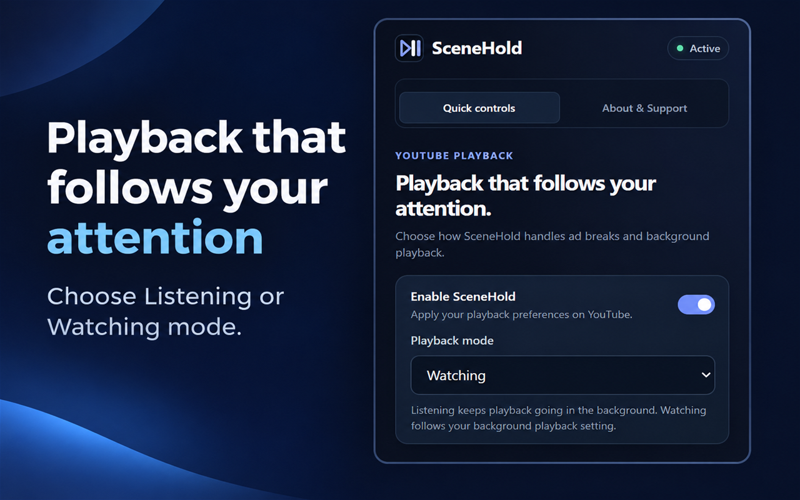
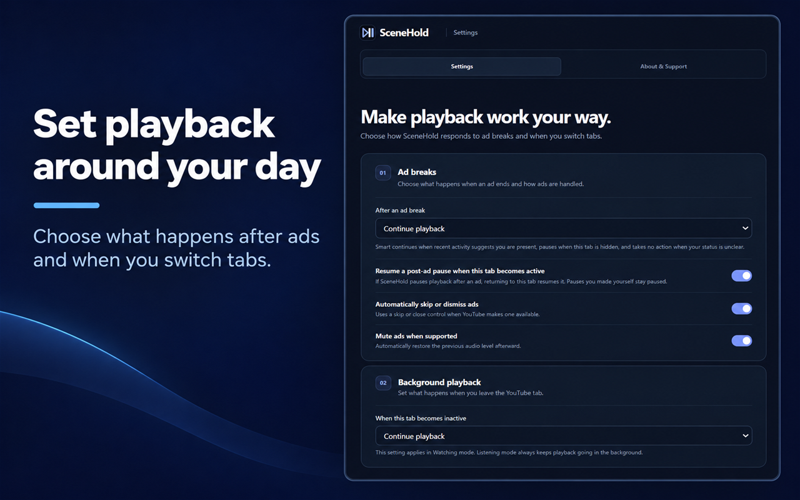
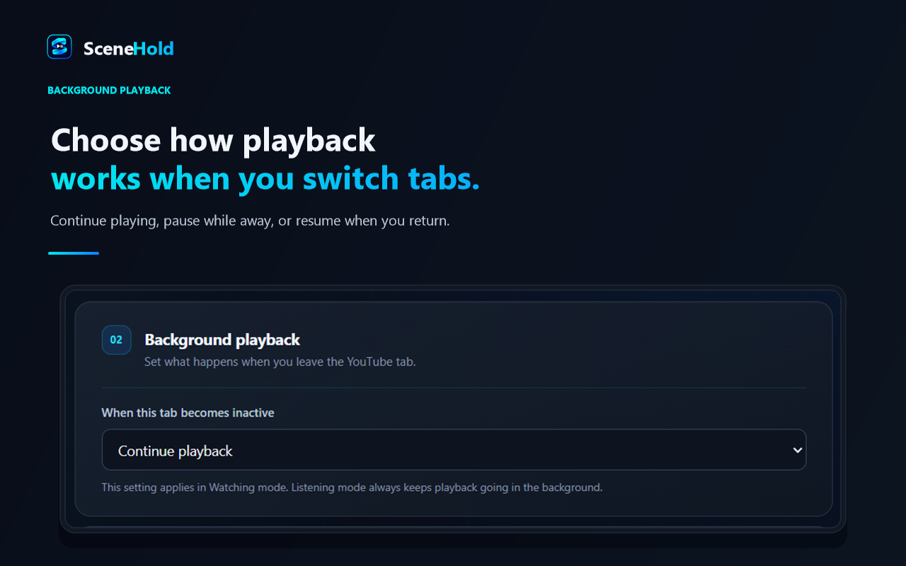
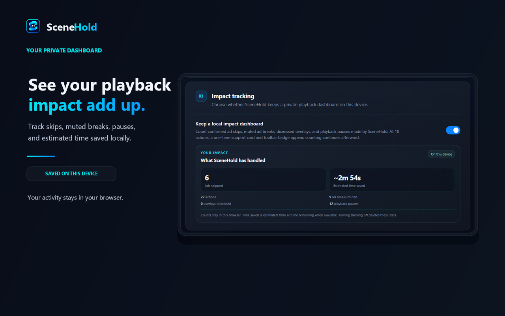

Listening and Watching modes
Listening mode keeps playback going in the background. Watching mode follows your background playback preference.
Privacy-first YouTube playback for Chrome & Edge
SceneHold is a free Manifest V3 extension for desktop YouTube in Chrome and Microsoft Edge. Mute ad breaks, use YouTube’s skip controls when available, and choose what playback does when you switch tabs.
Also works on Microsoft Edge No account required
Playback, made personal
Set up YouTube ad muting, available skip controls, and background playback for the way you watch on desktop.
Listening mode keeps playback going in the background. Watching mode follows your background playback preference.
In Watching mode, choose to continue playback, pause when the tab is inactive, or pause and resume when you return.
SceneHold activates YouTube’s skip or close control when one becomes available. Ads without a compatible control continue normally.
Optionally mute supported ad breaks and restore audio when the main video resumes, while respecting manual audio changes you make.
Choose Continue, Pause, or Smart. Smart continues when recent activity suggests you are present, pauses when the tab is hidden, and takes no action when your status is unclear.
Enable or disable SceneHold and switch modes in the popup. The toolbar icon shows whether SceneHold is active on YouTube.
Optionally resume a post-ad pause when you return to the tab. Pauses you made yourself stay paused.
See cumulative ad skips, muted ad breaks, dismissed overlays, SceneHold pauses, and estimated time saved. At 10 actions, a one-time support card and toolbar badge appear; counting continues afterward.
About ad skipping: SceneHold uses YouTube’s own skip or close control when it appears. It cannot skip ad formats without a compatible control, and YouTube interface changes may affect compatibility.
Easy to get started
Get the controls you want, then let SceneHold follow your preferences while you watch.
Start here
Install SceneHold in Chrome or Edge and pin it to your toolbar. It’s free, with no account required.
Make it yours
Pick Listening or Watching mode, then set your preferences for ad breaks and background playback. Change them anytime.
Back to your video
SceneHold follows your choices on desktop YouTube, using available skip or close controls and your playback settings.
A closer look
Explore the quick controls and playback settings for YouTube.



Your impact
The local dashboard tracks ad skips, muted breaks, dismissed overlays, playback pauses, and estimated time saved all on your device.

SceneHold Pro · in development
Join the optional email waitlist to hear when SceneHold Pro is ready. Your current SceneHold features will remain free.
Common questions
Learn what SceneHold can do, how its controls work, and what it supports today.
No. SceneHold activates YouTube’s skip or close control when YouTube provides one. It does not remove or block ads, and ads without a compatible control play normally. You can also choose to mute supported ad breaks.
Listening mode keeps playback going when you switch tabs. In Watching mode, choose to continue playback, pause while the tab is inactive, or pause and resume when you return. Playback still depends on YouTube and your browser being able to play the video.
SceneHold’s current features are free, and support is optional. Extension preferences and impact stats stay in your browser; playback data is not sent to a server. The separate Pro waitlist uses the information you submit through Google Forms for launch updates. See the Privacy Policy.
Not currently. SceneHold supports desktop YouTube in Chrome and Microsoft Edge. Support for other streaming platforms is something the developer hopes to explore in the future.
“I wanted playback to follow my day, not interrupt it.”
Why I started building SceneHold
Built on evenings and weekends
I’m Ravi Raj, a software developer from India. I created SceneHold to solve a daily frustration: loud ad breaks hijacking my volume, breaking my concentration, or causing me to miss a scene the moment I switch tabs.
SceneHold is independently engineered and maintained with zero ads, zero remote analytics, and no bloated subscriptions. Core playback features are free. If SceneHold keeps YouTube on your terms, a voluntary contribution helps fund ongoing compatibility updates and future platform support.
Privacy note: Local impact stats are enabled by default to power the dashboard and milestone. They store aggregate action counts and estimated time saved on your device, are never transmitted, and can be disabled in Settings.
What I hope to explore next Expanding playback controls to Prime Video, JioHotstar, Netflix, and other streaming platforms. These services are not supported yet.
Independent development
SceneHold is free, and support is completely optional. Contribute whatever feels right, even the price of a coffee, to help me keep YouTube playback controls maintained and explore future platform support. Support does not unlock features or create a subscription.
Optional one-time support. Checkout is handled by Dodo Payments.
Contact me by emailClear, simple policies
SceneHold is designed to work locally in your browser. The policies below explain what the extension reads, what stays on your device, and how optional support works.
Last updated: November 24, 2026
SceneHold runs on desktop YouTube pages. To provide its playback controls, it checks the YouTube player and ad interface, the active tab, and whether the tab is visible. Smart playback decisions can also use recent interaction signals while the page is open. These signals are processed locally in your browser.
Your preferences, such as Listening or Watching mode, ad
controls, and background playback behavior, are stored in
your browser’s local extension storage (chrome.storage.local) on your device.
Recent activity used for Smart decisions is held in page
memory and is not saved as a history.
When enabled, SceneHold keeps cumulative counts of confirmed ad skips, muted ad breaks, dismissed overlays, and playback pauses it makes. It estimates time saved from ad time remaining when YouTube exposes that timing; the estimate may be unavailable for some ads. At 10 actions, the popup shows a one-time dismissible support card and the toolbar displays a small badge. Counting continues afterward. These stats contain no YouTube URLs, video identifiers, timestamps, or browsing history. They stay in your browser and are never sent to the developer or an analytics server. Tracking is enabled by default; turning it off deletes the stats.
SceneHold does not send your YouTube URLs, video or ad information, browsing history, settings, or activity signals to the developer or to an analytics server. The extension has no account system, remote analytics, advertising, or telemetry. It does not include a SceneHold-operated backend.
If you choose to join the optional Pro waitlist, Google Forms processes the information you submit, including your email address. I use it to manage the waitlist and send updates about SceneHold Pro’s availability. This is separate from the extension; your YouTube activity, settings, and impact stats are not included with your signup. To request removal from the waitlist, contact me by email. Google’s handling of form data is described in its Privacy Policy.
If you email me, your message and the details you choose to include are handled by your email provider and used to reply to you. If you choose to use the Dodo Payments checkout linked above, Dodo handles checkout and payment information under its own policies as Merchant of Record. SceneHold does not collect payment card details. See Dodo Payments’ Privacy Policy.
SceneHold works with YouTube in your browser and links to third-party services such as Google Forms and Dodo Payments. Those services operate under their own terms and privacy policies. GitHub Pages hosts this site and may process technical request data under GitHub’s policies. SceneHold is an independent project and is not affiliated with or endorsed by Google or YouTube.
SceneHold uses information handled by the extension only to provide its user-facing playback controls. It does not use that information for advertising, profiling, or unrelated purposes, in line with the Chrome Web Store User Data Policy, including its Limited Use requirements.
For privacy questions, contact iamraviraj0804@gmail.com.
Last updated: November 23, 2026
SceneHold’s current core features are free to use. You do not have to pay to install or use the extension. Any support payment offered in the future is voluntary, one-time, and does not unlock features or create a subscription.
SceneHold is currently intended for desktop YouTube in Chrome and Microsoft Edge. SceneHold activates skip controls that YouTube provides; ads without a skip control cannot be skipped. YouTube may change its player or interface, which can affect compatibility. You remain responsible for your use of YouTube and for following applicable terms and laws.
I may update, change, or discontinue features to maintain the extension. SceneHold is provided on an “as available” basis to the extent allowed by law. Nothing in these terms limits consumer rights that cannot legally be excluded.
Questions about these terms: iamraviraj0804@gmail.com.
Last updated: November 22, 2026
SceneHold is free. Any tip or support payment is voluntary and does not purchase an extension feature, subscription, or other paid entitlement. Support payments are one-time and do not create recurring billing.
If a support payment is accidentally duplicated, unauthorized, or made in error, contact Dodo Payments using the receipt or checkout support details. You can also email iamraviraj0804@gmail.com with the transaction reference so I can help route the request. Refund requests are handled through Dodo Payments and are subject to its checkout terms and applicable consumer law.
SceneHold does not offer recurring billing. If that changes in the future, this page will be updated before any new payment option is offered.
Developer: Ravi Raj · India
For help with SceneHold, privacy requests, policy questions, or payment support, email iamraviraj0804@gmail.com. Please avoid sending passwords or full payment card details by email.